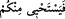
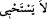

Bahçelerdeki yaprakların sayısı,
Hepsi O’nun yanında zâhir olur,
Hepsi O’nun ilminde hazır olur.
Bu “eş-Şehîd” isminin husûsiyeti, bâtıldan hakka dönüştür. Hatta âsî ve yaramaz bir
çocuğun veya bu durumda olan bir zevcenin alnından tutulup seher vakti bu isim bin
kere okunsa hâli düzelir. Nitekim Fâsî’nin Şerhu’l-esmâ’sında böyle geçmektedir.
Yüce Allah’tan hallerimizi, sözlerimizi ve fiillerimizi düzeltip ıslah etmesini, emel ve
arzularımızı Kerîm olan yüce zâtına yönlendirmesini niyaz ederiz.
[268]. Müşâkele, edebiyatta bir kelimenin aynı cümle içinde iki ayrı mânâsını
kullanarak yapılan kelime oyunu. Bu âyette müşâkele “ ifâdesi ile “
ifâdeleri arasındadır.
[269]. Aclûnî, Keşfü’l-hafâ, I, 244, hadis no: 741
[270]. Ebû Dâvûd, Hammam 1, Vitir, 23; Nesâî, Gusül, 7
[271]. Münâvî, I, 224
[272]. Buhârî, Nikah 111, 112; Müslim, Hac 424; Tirmizî, Rada 16; Müsned, I, 222;
III, 339
[273]. Hâkim, Müstedrek, III, 148
[274]. İbn Kesir, IV, 292
[275]. Kurtubî, Câmî, XIV, 230.